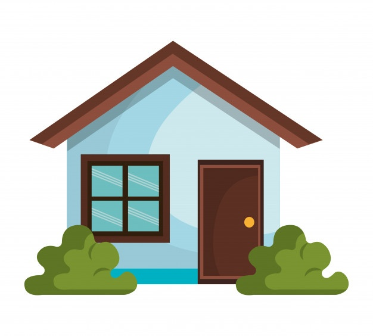

Paquito Navarro comenzó a jugar al pádel a los 5 años. A los 9 años empezó a disputar sus primeros torneos, llamando la atención de todo el mundo que observaba su juego. A los 10 años se convirtió en subcampeón del mundo de su categoría junto a Jaime Bergareche. Con 14 años volvió a jugar otro campeonato del mundo para jugadores de su edad, perdiendo de nuevo en la final.
El siguiente mundial lo disputó en categoría júnior con 16 años, disputando de nuevo la final y cayendo de nuevo en ésta. Tras esto, comenzó a entrenar con Adrián Allemandi hasta los 20 años y consiguió romper su maleficio con las finales tras la consecución del Mundial Junior, el cual sería el último de Paquito.
En 2009 entró en circuito profesional Padel Pro Tour junto a Jordi Muñoz y ese mismo año se proclamó campeón de España sub-23. En 2010 empezó el circuito junto a Pablo Cardozo y terminó junto a Pitu Losada. En 2012 se consagró en circuito profesional junto a Adrián Allemandi donde llegó a dos finales y jugó el Máster Final. En 2013, vuelve a jugar con Jordi Muñoz y en 2014 vuelve a jugar con Adrián Allemandi y también jugó con Maxi Grabiel, con quien ganó el Master de Valencia al ganar en la final a la pareja n.º 1, la formada por Fernando Belasteguín y Juan Martín Díaz.
En 2015, Matías Díaz se convierte en su nueva pareja, llegando a ser ambos la segunda pareja del circuito y realizando una gran temporada. Sin embargo, en la temporada 2016, Paquito, decide cambiar de compañero y comienza dicha temporada junto a Sanyo Gutiérrez con el que llegó a las semifinales del primer torneo de la temporada.
El narval (Monodon monoceros) es una especie de cetáceo odontoceto de la familia Monodontidae que habita los mares del Ártico y el norte del Océano Atlántico. Es el único integrante del género Monodon y una de las dos especies de la familia junto a la beluga (Delphinapterus leucas).
Los machos de esta especie se caracterizan por presentar un colmillo muy largo y retorcido de manera helicoidal que puede llegar a medir dos metros y pesar hasta diez kilogramos (en el Museo Rocsen en Nono, provincia de Córdoba en la República Argentina poseen un colmillo de 270 cm que según dice el fundador Juan Bouchon es el más grande del mundo[cita requerida]). Se cree que este diente especializado puede ser un receptor sensorial o un carácter sexual secundario.
Esta especie está adaptada a vivir en el Ártico y se alimenta de animales del fondo marino. Carece de aleta dorsal y tiene un tamaño mediano entre los cetáceos, con una longitud promedio en los adultos que oscila ente 4 y 4,5 m y un peso de entre 1000 y 1600 kg. Posee una dieta que se restringe únicamente a algunos peces y crustáceos, de los cuales se alimenta primordialmente durante los meses de invierno, época en la cual consume un gran volumen de presas que captura en el fondo marino. Para ello debe realizar inmersiones que con mucha frecuencia superan los 800 m bajo la superficie, las cuales pueden durar hasta 30 minutos. Después del cachalote, zifio y elefante marino es el mamífero marino que se sumerge a mayor profundidad.
|  |
|
|
|
|
|